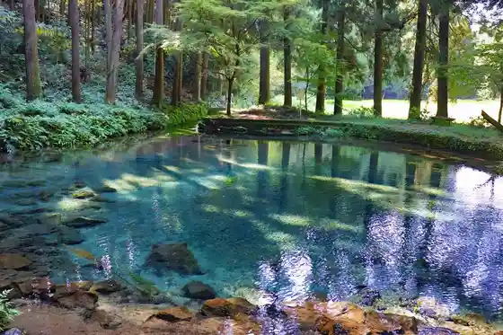
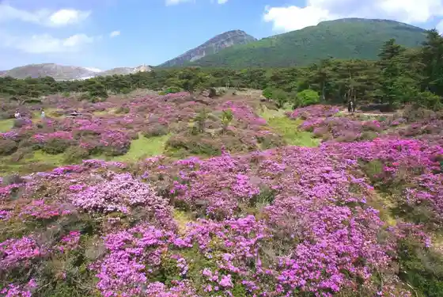
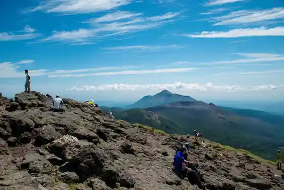

Jin no Ike
Ebino, Miyazaki · 0984-37-2663 · Official / source link

Ebino Highlands
Ebino, Miyazaki · 0984-33-3002 · Official / source link

Kankoku Gaku
Ebino, Miyazaki · 0984-33-3002 · Official / source link

Green Park Ebino
Ebino, Miyazaki · 050-3139-8760 · Official / source link
Morioka Shiro
Ebino, Miyazaki · 0984-35-1516 · Official / source link
Ebino Highlands Hotel (Ken'ei Kokuminshukusha Ebino Highlands So)
Ebino, Miyazaki · 0984-33-0161 · Official / source link
Sugawara Shrine (Nishikawa Kita Suiryu)
Ebino, Miyazaki · 0984-37-2663 · Official / source link
Kanematsu Honen
Ebino, Miyazaki · 0984-35-0987 · Official / source link
Hakucho Onsen Ue Yu
Ebino, Miyazaki · 0984-33-1104 · Official / source link
Roadside Station Ebino Autodoasuteshon Ebino
Ebino, Miyazaki · 0984-35-3338 · Official / source link
Ebino Highlands Okugai Aisusu Ga to Ba
Ebino, Miyazaki · 0984-33-0161 · Official / source link
Hakucho Shrine
Ebino, Miyazaki · Official / source link
Roku Kannon Oike
Ebino, Miyazaki · 0984-33-3002 · Official / source link
Kyo Town Kanko Hotel
Ebino, Miyazaki · 0984-37-1231 · Official / source link
Ka Kuto Onsen
Ebino, Miyazaki · 0984-35-1230 · Official / source link
Ebino Eko Museum Center
Ebino, Miyazaki · 0984-33-3002 · Official / source link
Yatake Highlands
Ebino, Miyazaki · 0984-37-2663 · Official / source link
Ashiyu no Eki Ebino Highlands
Ebino, Miyazaki · 0984-33-1155 · Official / source link
Nagayama Sports Park
Ebino, Miyazaki · 0984-48-9677 · Official / source link
Hakucho Onsen Shimoyu
Ebino, Miyazaki · 0984-33-3611 · Official / source link
Ku Ryu Mago Bridge
Ebino, Miyazaki · 0984-35-3838 · Official / source link
Ebino Tami Gym
Ebino, Miyazaki · 0984-48-9677 · Official / source link
Oji Hara Sports Park (Yakyujo)
Ebino, Miyazaki · 0984-48-9677 · Official / source link
Yatake Kogen Beruton'oto Campground
Ebino, Miyazaki · 0984-37-1033 · Official / source link
Ebino Sumoba
Ebino, Miyazaki · 0984-48-9677 · Official / source link
Nagayama Sports Park (Tenisukoto)
Ebino, Miyazaki · 0984-48-9677 · Official / source link
Tokyu Renshujo (Oji Hara Sports Park)
Ebino, Miyazaki · 0984-48-9677 · Official / source link